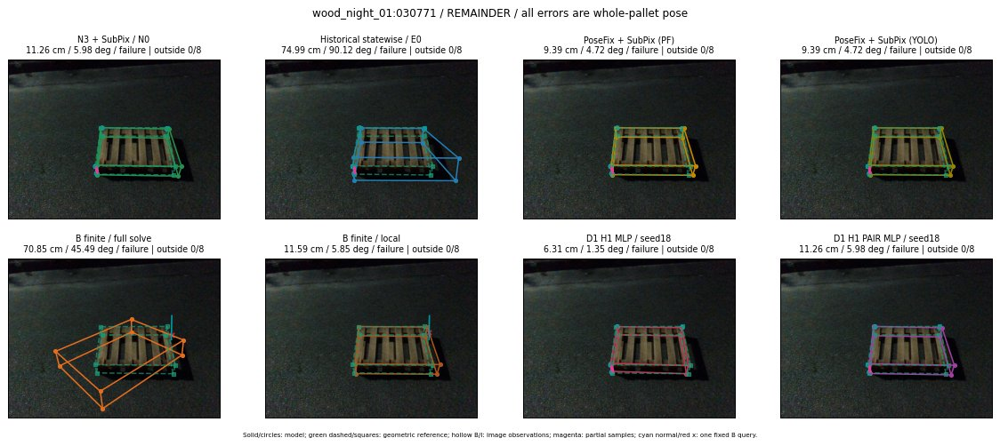

Whole-pallet pose errors; reference is a fixed geometric annotation, not certified physical GT.

Scores are uncalibrated logits. N0 retention is a numerical pose alias; it differs from H0 none or B fallback. B/I and profiles in baseline/B panels are original observations; L panels use new D1 observations. Only one deterministic supported B query is shown in a thumbnail; full support counts are below. Grey privacy rectangles edit the display copy only and are unrelated to O states; all observations were measured on original pixels. Thumbnails use JPEG quality85; detailed scientific panels are PNG.
| Method | Whole pose / cm, deg | Actual source | Selected ID | Score | Archived candidates | Eligible | N0 retained | H0 none | Fallback | Finite profiles |
|---|---|---|---|---|---|---|---|---|---|---|
| Raw YOLO + F | 10.44 cm / 5.73 deg / failure | OTHER | None | N/A | N/A | N/A | False | N/A | None | N/A |
| N3 + SubPix / N0 | 11.26 cm / 5.98 deg / failure | N0 | None | N/A | N/A | N/A | True | N/A | None | N/A |
| Historical statewise / E0 | 74.99 cm / 90.12 deg / failure | E0_REGENERATED | None | N/A | N/A | N/A | False | N/A | False | N/A |
| PoseFix raw | 9.58 cm / 5.35 deg / failure | OTHER | None | N/A | N/A | N/A | False | N/A | None | N/A |
| PoseFix + SubPix (PF) | 9.39 cm / 4.72 deg / failure | OTHER | None | N/A | N/A | N/A | False | N/A | False | historical support records 9; finite audit N/A |
| PoseFix + SubPix (YOLO) | 9.39 cm / 4.72 deg / failure | OTHER | None | N/A | N/A | N/A | False | N/A | False | historical support records 9; finite audit N/A |
| Historical L, seed18 | 11.26 cm / 5.98 deg / failure | N0 | N0 | N/A | 52 | 52 | True | True | True | N/A |
| Historical B fixed bank | 75.81 cm / 90.03 deg / failure | OTHER | G10/SWAPPED_WD/sample/0 | N/A | N/A | N/A | False | N/A | False | N/A |
| Historical B full | 69.36 cm / 35.95 deg / failure | OTHER | NEW/B/ORIGINAL_WD/h1/G10/SWAPPED_WD/sample/1/PROPOSED_NATIVE_YAW_1 | N/A | N/A | N/A | False | N/A | False | N/A |
| Historical edge full | 22.70 cm / 5.46 deg / failure | OTHER | NEW/edge/ORIGINAL_WD/h1/G10/SWAPPED_WD/sample/1/PROPOSED_NATIVE_YAW_1 | N/A | N/A | N/A | False | N/A | False | N/A |
| Historical AB full | 53.57 cm / 53.30 deg / failure | OTHER | NEW/AB/SWAPPED_WD/h3/G10/SWAPPED_WD/sample/2/PROPOSED_NATIVE_YAW_3 | N/A | N/A | N/A | False | N/A | False | N/A |
| B finite / fixed bank | 75.81 cm / 90.03 deg / failure | OTHER | G10/SWAPPED_WD/sample/0 | N/A | N/A | N/A | False | N/A | False | 4/4 |
| B finite / full solve | 70.85 cm / 45.49 deg / failure | OTHER | NEW_FINITE/B/ORIGINAL_WD/h2/G10/SWAPPED_WD/sample/4/PROPOSED_NATIVE_YAW_2 | N/A | N/A | N/A | False | N/A | False | 4/4 |
| B finite / local | 11.59 cm / 5.85 deg / failure | OTHER | NEW_FINITE/B/ORIGINAL_WD/h0/N0_LOCAL_SAME_PHYSICAL_POSE/ORIGINAL_WD | N/A | N/A | N/A | False | N/A | False | 4/4 |
| Edge finite / full solve | 25.13 cm / 9.47 deg / failure | OTHER | NEW_FINITE/edge/ORIGINAL_WD/h0/LOGGED/G13/ORIGINAL_WD/outline_consider/19/PROPOSED_NATIVE_YAW_0 | N/A | N/A | N/A | False | N/A | False | 4/4 |
| D0 H0 MLP / seed18 | 11.26 cm / 5.98 deg / failure | N0 | N0 | 0.949822187423706 | 18 | 18 | True | True | True | N/A |
| D0 H0 MLP / seed19 | 11.26 cm / 5.98 deg / failure | N0 | N0 | 1.2970783710479736 | 18 | 18 | True | True | True | N/A |
| D0 H0 MLP / seed20 | 11.26 cm / 5.98 deg / failure | N0 | N0 | -1.6580491065979004 | 18 | 18 | True | True | True | N/A |
| D0 H1 MLP / seed18 | 11.26 cm / 5.98 deg / failure | N0 | N0 | -4.758698463439941 | 18 | 18 | True | False | False | N/A |
| D0 H1 MLP / seed19 | 4.47 cm / 9.80 deg / failure | OTHER | G10/ORIGINAL_WD/selected | -3.877436637878418 | 18 | 18 | False | False | False | N/A |
| D0 H1 MLP / seed20 | 11.26 cm / 5.98 deg / failure | N0 | N0 | -5.377222061157227 | 18 | 18 | True | False | False | N/A |
| D1 H0 MLP / seed18 | 11.26 cm / 5.98 deg / failure | N0 | N0 | 5.872984886169434 | 18 | 18 | True | True | True | N/A |
| D1 H0 MLP / seed19 | 11.26 cm / 5.98 deg / failure | N0 | N0 | 5.238226890563965 | 18 | 18 | True | True | True | N/A |
| D1 H0 MLP / seed20 | 11.26 cm / 5.98 deg / failure | N0 | N0 | 5.098091125488281 | 18 | 18 | True | True | True | N/A |
| D1 H1 MLP / seed18 | 6.31 cm / 1.35 deg / failure | OTHER | WD0/ORIGINAL_WD/sample/1 | -2.9570701122283936 | 18 | 18 | False | False | False | N/A |
| D1 H1 MLP / seed19 | 6.31 cm / 1.35 deg / failure | OTHER | WD0/ORIGINAL_WD/sample/1 | -3.028104066848755 | 18 | 18 | False | False | False | N/A |
| D1 H1 MLP / seed20 | 6.31 cm / 1.35 deg / failure | OTHER | WD0/ORIGINAL_WD/sample/1 | -3.3537492752075195 | 18 | 18 | False | False | False | N/A |
| D1 H1 ROLE AFFINE / seed18 | 11.26 cm / 5.98 deg / failure | N0 | N0 | -0.6773386001586914 | 18 | 18 | True | False | False | N/A |
| D1 H1 ROLE AFFINE / seed19 | 11.26 cm / 5.98 deg / failure | N0 | N0 | -0.4163464307785034 | 18 | 18 | True | False | False | N/A |
| D1 H1 ROLE AFFINE / seed20 | 11.26 cm / 5.98 deg / failure | N0 | N0 | -0.35401976108551025 | 18 | 18 | True | False | False | N/A |
| D1 H1 PAIR MLP / seed18 | 11.26 cm / 5.98 deg / failure | N0 | N0 | -2.096989870071411 | 18 | 2 | True | False | False | N/A |
| D1 H1 PAIR MLP / seed19 | 11.26 cm / 5.98 deg / failure | N0 | N0 | -2.1278746128082275 | 18 | 2 | True | False | False | N/A |
| D1 H1 PAIR MLP / seed20 | 11.26 cm / 5.98 deg / failure | N0 | N0 | -2.9189915657043457 | 18 | 2 | True | False | False | N/A |
| D1 H1 PAIR ROLE AFFINE / seed18 | 11.26 cm / 5.98 deg / failure | N0 | N0 | -0.9440810680389404 | 18 | 2 | True | False | False | N/A |
| D1 H1 PAIR ROLE AFFINE / seed19 | 11.26 cm / 5.98 deg / failure | N0 | N0 | -1.4315658807754517 | 18 | 2 | True | False | False | N/A |
| D1 H1 PAIR ROLE AFFINE / seed20 | 11.26 cm / 5.98 deg / failure | N0 | N0 | -0.7573448419570923 | 18 | 2 | True | False | False | N/A |
| Regenerated common E0 | 74.99 cm / 90.12 deg / failure | E0_REGENERATED | E0_REGENERATED | N/A | N/A | N/A | False | N/A | False | N/A |